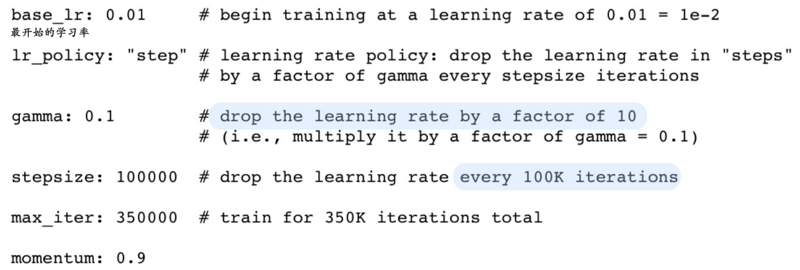
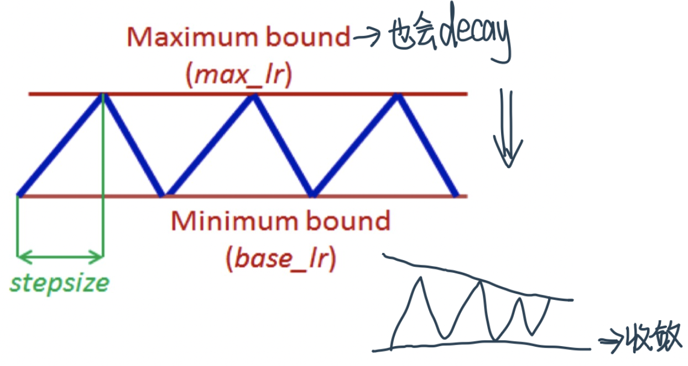

DL常见超参及调整策略
Contents
DL常见超参及调整策略¶
学习率¶
constant learning rate会遇到的问题¶
Constant Learning Rate过大或者过小：
+ 最佳：model adjust weight **in subsequent training loops** to arrive at cost minima
+ 低learning rate ⇒ converge过慢：converge to cost minima but very slowly
+ 高learning rate ⇒ 震荡(miss the minima)、不能converge（随着loops不断提升）
> Large learning rate may allow the algorithm to come close to a good solution but will then oscillate around the point or even diverge
Learning rate schedule¶
解决constant learning rate的各种问题
1、 Decay functions⇒先快后慢¶
一般来说，我们希望在训练初期学习率大一些，使得网络收敛迅速，在训练后期学习率小一些，使得网络更好的收敛到最优解。
Start with a higher learning rate to explore the loss space => find a good starting values for the weights
Use smaller learning rates in later steps to converge to a minima => tune the weights slowly
Function：
t: number of iterations/epochs
multi-step：根据非均匀步长对学习率进行调整，每隔一定步数（或者epoch）就减少为原来的gamma分之一：\(\alpha_{t}=\frac{\alpha_{0}}{\gamma^{n}} \quad \text { at step } \mathrm{n}\) 表示在第n次减少的时候reduce it by factor of \(\frac{1}{\gamma^{n}}\)例1：
# 使用固定步长衰减依旧先定义优化器 optimizer_StepLR = torch.optim.SGD(net.parameters(), lr=0.1) # 再给优化器绑定StepLR对象 StepLR = torch.optim.lr_scheduler.StepLR(optimizer_StepLR, step_size=step_size, gamma=0.65)
其中gamma参数表示衰减的程度，step_size参数表示每隔多少个step进行一次学习率调整，下面对比了不同gamma值下的学习率变化情况：

例2：Alexnet中的learningrate
 >[Link](https://blog.csdn.net/guzhao9901/article/details/116484887)：在每10、15、25、30的时候把原先的学习率乘个0.1 >```python model = ANet(classes=5) #加载模型 optimizer = optim.SGD(params = model.parameters(), lr=0.05) #优化方法使用SGD #在指定的epoch值，如[10,15，25，30]处对学习率进行衰减，lr = lr * gamma scheduler = lr_scheduler.MultiStepLR(optimizer, milestones=[10,15,25,30], gamma=0.1) ```
inverse: \(\alpha_{t}=\frac{\alpha_{0}}{1+\gamma \cdot t}\)Exponential 指数衰减: \(\alpha_{t}=\alpha_{0} \exp (-\gamma \cdot t)\)# 首先需要确定需要针对哪个优化器执行学习率动态调整策略，也就是首先定义一个优化器 optimizer_ExpLR = torch.optim.SGD(net.parameters(), lr=0.1) # 定义好优化器以后，就可以给这个优化器绑定一个指数衰减学习率控制器 ExpLR = torch.optim.lr_scheduler.ExponentialLR(optimizer_ExpLR, gamma=0.98)
其中参数gamma表示衰减的底数，选择不同的gamma值可以获得幅度不同的衰减曲线，如下：

polynomial: \(\alpha_{t}=\alpha_{0}\left(1-\frac{t}{\max_{t}}\right)^{n}\)\(\mathrm{n}=1\) gives linear
**4、学习率动态更新策略的说明**
负责学习率调整的类：StepLR、ExponentialLR和CosineAnnealingLR，其完整对学习率的更新都是在其**step()函数被调用以后完成的**。根据pytorch官网上给出的说明，scheduler.step()函数的调用应该在训练代码以后：
```python
scheduler = ...
>>> for epoch in range(100):
>>> train(...)
>>> validate(...)
>>> scheduler.step()
```
File "/var/folders/vn/78yrfhs92slfj6nr61fhb9w00000gn/T/ipykernel_36773/1195869720.py", line 1
**4、学习率动态更新策略的说明**
^
SyntaxError: invalid decimal literal
2、Cyclical Learning Rate¶
Idea is to have learning rate continuously change in cyclical manner with alternate increase and decrease phases
意义：比如说我们到一个local minimum之后 gradient很低，比如到了一个很平的地方，并不是一个good minimum，这个时候通过提升learning rate我们还有probability可以escape it
余弦退火衰减：严格的说，余弦退火策略不应该算是学习率衰减策略，因为它使得学习率按照周期变化，其定义方式如下：optimizer_CosineLR = torch.optim.SGD(net.parameters(), lr=0.1) CosineLR = torch.optim.lr_scheduler.CosineAnnealingLR(optimizer_CosineLR, T_max=150, eta_min=0)
参数T_max表示余弦函数周期；eta_min表示学习率的最小值，默认它是0表示学习率至少为正值。下图展示了不同周期下的余弦学习率更新曲线：

3、WarmUp¶
warmup 需要在训练最初使用较小的学习率来启动，并很快切换到大学习率而后进行常见的衰减decay。
这是因为，刚开始模型对数据的“分布”理解为零，或者是说“均匀分布”（当然这取决于你的初始化）；在第一轮训练的时候，每个数据点对模型来说都是新的，模型会很快地进行数据分布修正，如果这时候学习率就很大，极有可能导致开始的时候就对该数据过拟合，后面要通过多轮训练才能拉回来，浪费时间。当训练了一段时间（比如两轮、三轮）后，模型已经对每个数据点看过几遍了，或者说对当前的batch而言有了一些正确的先验，较大的学习率就不那么容易会使模型学偏，所以可以适当调大学习率。这个过程就可以看做是warmup。那么为什么之后还要decay呢？当模型训到一定阶段后（比如十个epoch），模型的分布就已经比较固定了，或者说能学到的新东西就比较少了。如果还沿用较大的学习率，就会破坏这种稳定性，用我们通常的话说，就是已经接近loss的local optimal了，为了靠近这个point，我们就要慢慢来。
BERT的预训练过程就是用了学习率WarmUp的方法。
Batch Size¶
定义：input中我们用来计算Loss、gradient，从而对weight进行一次update所用的数据batch的行数
意义：
Batch size is restricted by the GPU memory (12GB for K40, 16GB for P100 and V100) and the model size
Model and batch of data needs to remain in GPU memory for one iteration
ResNet152 we need to stay below 10
Are you restricted to work with small size mini-batches for large models and/or GPUs with limited memory
No, you can simulate large batch size by delaying gradient/weight updates to happen every \(n\) iterations (instead of \(n=1\) ) ; supported by frameworks